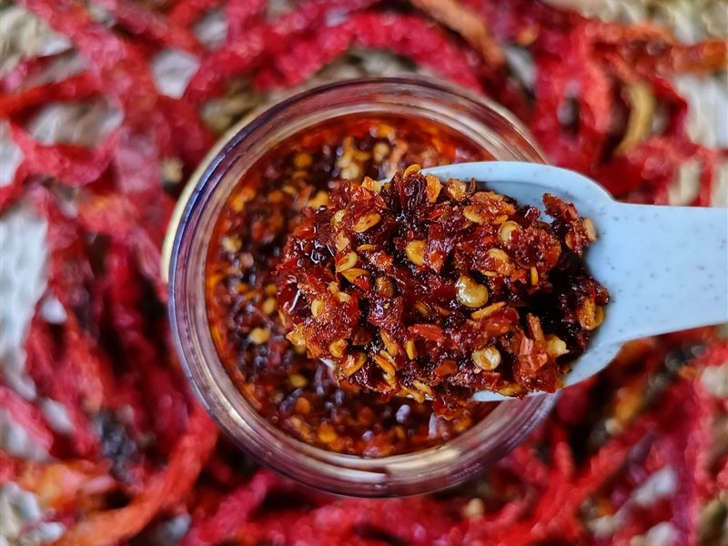

Frisch
Direkt in Salsa, Salat oder auf Pizza
Nach Monaten voller Pflege ist es endlich so weit: Die Chilis sind reif. Reife Schoten erkennst du an ihrer vollen Sortenfarbe, die je nach Sorte rot, gelb, orange oder auch dunkelviolett sein kann, und an der leicht glänzenden, festen Schale. Je länger eine Schote an der Pflanze reift, desto mehr Aroma und in der Regel auch Schärfe entwickelt sie. Grün geerntete Früchte sind aber ebenfalls essbar, sie schmecken nur frischer und weniger fruchtig.
Zum Ernten schneidest du die Schoten mit einer Schere oder einem scharfen Messer samt kurzem Stielansatz ab, statt sie abzureißen. So bleiben die Äste der Pflanze heil. Regelmäßiges Pflücken regt die Pflanze außerdem an, neue Blüten und Früchte zu bilden. Bei scharfen Sorten lohnt es sich, Handschuhe zu tragen und danach nicht ins Gesicht oder in die Augen zu fassen, denn das enthaltene Capsaicin reizt Haut und Schleimhäute.
Weil eine gute Ernte schnell mehr Chilis liefert, als man frisch essen kann, stelle ich dir hier sechs Wege vor, die Schoten zu verwerten: vom direkten Genuss über das Trocknen und Mahlen zu Flocken und Pulver bis zu Chiliöl und einer selbst gemachten Hot Sauce. Ein Klick auf „Mehr erfahren“ öffnet jeweils eine kurze Anleitung mit den wichtigsten Schritten.
Direkt in Salsa, Salat oder auf Pizza

An der Luft, im Ofen oder Dörrautomat

Getrocknete Schoten grob zerkleinern

Fein mahlen und luftdicht lagern

Chilis in Öl einlegen, Ziehzeit

Mein Rezept: fermentieren und einkochen
Frisch geerntet haben Chilis das meiste Aroma. Du kannst sie roh oder gegart verwenden.
Die Schärfe sitzt vor allem in den hellen Scheidewänden. Wer es milder mag, entfernt Scheidewände und Kerne.
Getrocknete Chilis halten sich über ein Jahr und sind die Grundlage für Flocken und Pulver. Besonders gut trocknen kleine, dünnfleischige Sorten wie Cayenne.
Die Chilis sind fertig, wenn sie rascheln und beim Biegen brechen. Sind sie noch biegsam, brauchen sie mehr Zeit, sonst schimmeln sie bei der Lagerung.
Chiliflocken sind schnell gemacht und vielseitig: Sie passen auf Pizza, Pasta, Eier und in Marinaden.
Selbst gemahlenes Chilipulver schmeckt deutlich intensiver als gekauftes, weil du genau weißt, welche Sorte drinsteckt. Du kannst auch mehrere Sorten mischen.
Nach dem Mahlen den Deckel der Mühle erst nach einigen Minuten öffnen, damit sich der Staub setzt. Handschuhe tragen und das Gerät gründlich reinigen.
Chiliöl verleiht Nudeln, Suppen und Pizza Schärfe und Aroma. Entscheidend ist, dass du nur vollständig getrocknete Chilis verwendest.
Frische Chilis in Öl können gefährliche Bakterien (Botulismus) bilden. Verwende deshalb nur getrocknete Schoten, bewahre das Öl im Kühlschrank auf und verbrauche es innerhalb weniger Wochen.
Eine fermentierte Hot Sauce schmeckt komplexer als eine einfach gekochte. Das Prinzip ist simpel: Milchsäurebakterien vergären die Chilis in Salzlake, danach wird alles püriert und abgefüllt.